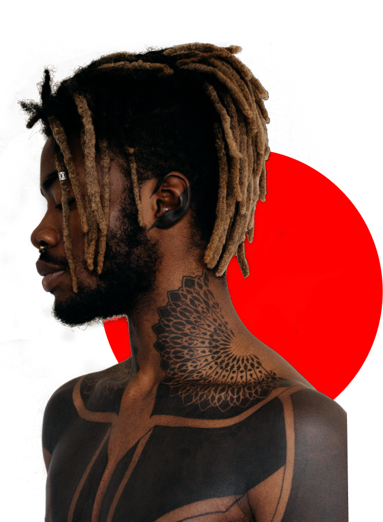

Tattooing involves repeatedly piercing your skin's top layer with a sharp needle covered with pigment. So getting a tattoo is generally always painful, though people may experience different levels of pain.
Transylvania
Tattoo Studio
Make your ink as unique as you are with the best Tattoo Studio in Transylvania. Let's meet and talk about it!

420+
Happy Clients
630
Projects Completed
12
Dedicated Artists
100%
Sterile Workplace